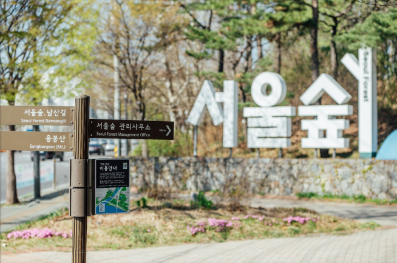

공원소개
공원소개
서울숲은 오래전 임금의 사냥터였고, 1908년 설치된
서울 최초의 상수원 수원지였으며,
이후 경마장, 골프장으로 활용되기도 했습니다.
2002년 시민의 녹색 권리를 위해 뚝섬 개발 사업 대신
대규모 공원을 조성하기로 결정하였고,
영국 하이드 파크
(Hyde Park) 및 뉴욕 센트럴 파크(Centarl Park)에 버금가는
서울의 웰빙 공간으로 조성합니다.
조성 당시 5,000여 시민의 기금과 봉사로 2005년 6월 18일
나무가 우거지고 호수가 있는 도시숲으로 탈바꿈했습니다.
서울숲은 한강과 중랑천이 만나고
한강-용산-남찬-청계천-서울숲-한강으로 연결되는 서울 도심을
가로지르는 녹지 축의 하나로서 중요한 역할을 하고 있으며,
자연과 함께 숨 쉬는 생명의 숲, 시민들이 함께 만든 참여의 숲,
숲과 문화가 어우러지는 서울의 대표적인 녹색 쉼터가 되었습니다.

공원 위치 |
서울 성동구 뚝섬로 273 오시는길 |
|---|---|
문의 |
02-460-2905 |
개원 |
2005. 6.18. |
면적 |
480,994㎡ |
주요시설 |
|
주요식물 |
|
교통안내 |
[지하철]
|